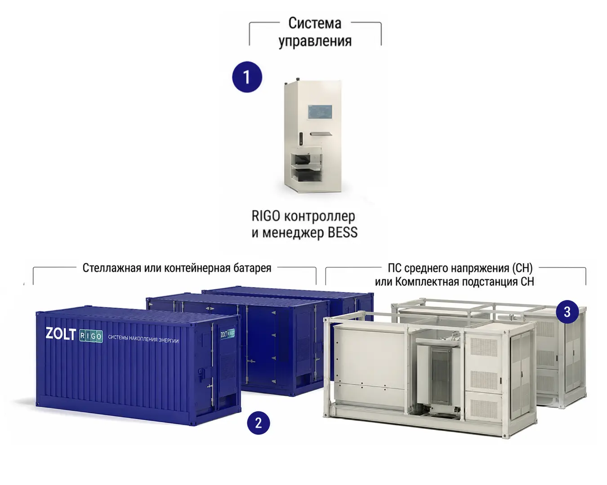

Поддержка нагрузки
Запас энергии можно использовать в периоды повышенного потребления. При подборе проверяем мощность, длительность пиков и возможность заряда между ними.

Другие контейнерные решения
Контейнерные и модульные системы для индивидуального подбора под объект.
Стоимость — по конфигурации проекта
Запросить предложение ↗Запас энергии можно использовать в периоды повышенного потребления. При подборе проверяем мощность, длительность пиков и возможность заряда между ними.
Согласуем накопление и выдачу энергии с графиком солнечной станции или генератора. Совместимость определяется схемой подключения и управлением.
Для выбранных нагрузок отдельно определяем время поддержки, допустимый перерыв и необходимые устройства переключения.
Для многовариантных моделей параметры приведены по исполнениям. Номинальный запас энергии не равен полезной энергии на нагрузке; длительность работы рассчитывается под объект.
| Параметр | Power X 2.5MW/5MWh | Power X 2.5MW/10MWh |
|---|---|---|
| Тип системы | Контейнерная BESS | Контейнерная BESS |
| Исполнение | Для зарубежных рынков | Для зарубежных рынков |
| Номинальная выходная активная мощность | 2 500 кВт | 2 500 кВт |
| Номинальная энергоёмкость батарей | 5 015,9616 кВт·ч | 10 031,92 кВт·ч |
| Номинальное напряжение ячейки | 3,2 В | 3,2 В |
| Ёмкость ячейки | 314 А·ч | 314 А·ч |
| Конфигурация батарейной системы | 12P416S | 12P416S × 2 |
| Диапазон напряжения батарей | 1 164,8–1 497,6 В | 1 164,8–1 497,6 В |
| Количество батарейных контейнеров | 1 | 2 |
| Формат батарейного контейнера | 20 футов | 20 футов каждый |
| Охлаждение аккумуляторной части | Жидкостное | Жидкостное |
| Параметр | Значение для обеих моделей |
|---|---|
| Номинальная выходная активная мощность AC | 2 500 кВт |
| Количество входов DC | 2 |
| Коэффициент гармонических искажений тока AC | Менее 3% |
| Номинальное выходное напряжение | 690 В переменного тока |
| Диапазон напряжения AC | 586,5–759 В |
| Коэффициент мощности | Более 0,99 |
| Диапазон регулирования реактивной мощности | От −105 до +105%, по исходной спецификации |
| Номинальная частота сети | 50 Гц |
| Допустимый диапазон частоты | 46,5–51,5 Гц |
| Гальваническая развязка | Трансформаторная |
| Охлаждение AC-оборудования | Интеллектуальное воздушное |
| Параметр | Значение |
|---|---|
| Номинальная полная мощность | 2 750 кВА |
| Напряжения обмоток и диапазон регулирования | 37 ± 2 × 2,5% / 0,69 кВ |
| Группа соединения обмоток | Dy11 |
| Параметр | Power X 2.5MW/5MWh | Power X 2.5MW/10MWh |
|---|---|---|
| Габариты блока PCS с трансформатором, Ш × В × Г* | 9 087 × 2 896 × 2 438 мм | 9 087 × 2 896 × 2 438 мм |
| Габариты батарейного контейнера, Ш × В × Г* | 6 058 × 2 896 × 2 438 мм | 6 058 × 2 896 × 2 438 мм, каждый из двух |
| Масса блока PCS с трансформатором | 20 т | 20 т |
| Масса батарейных контейнеров | Не более 44 т | Не более 44 т каждый |
| Параметр | Значение |
|---|---|
| Степень защиты аккумуляторных блоков PACK | IP67 |
| Степень защиты контейнеров | IP54 |
| Антикоррозионное исполнение | C5 |
| Рабочая температура окружающей среды | От −30 до +50 °C |
| Рабочая относительная влажность | 5–95%, без конденсации |
| Максимальная высота эксплуатации | 4 000 м |
| Контроль неисправностей | Интеллектуальное обнаружение |
| Защита от теплового разгона | Предусмотрена |
| Пожаротушение | Аэрозольное и водяное |
| Противопожарная вентиляция | Вентилятор во взрывозащищённом исполнении |
| Параметр | Значение |
|---|---|
| Режимы управления | PQ, VF, SVG, VSG |
| Прохождение повышений и провалов напряжения | Поддерживается |
| Автономная работа | Поддерживается |
| Запуск без внешнего питания — black start | Поддерживается |
| Реакция на команды диспетчеризации | Быстрый отклик, без указания времени в исходнике |
| Интерфейсы связи | CAN, RS485, LAN |
| Протоколы внешнего обмена данными | Modbus TCP, IEC 61850 |
| Часть системы | Перечень |
|---|---|
| Аккумуляторная часть DC | IEC 62619; IEC 62477; IEC 61000-6-2; IEC 61000-6-4; IEC 63056; IEC 62933; UN 38.3 |
| Преобразователь PCS | EC62477 — обозначение из исходника, требует уточнения; IEC 61000; IEC 62109 |
| Трансформаторное оборудование | IEC 60076; IEC 62271 |
Уточним нагрузку, условия размещения и режимы работы. В предложении зафиксируем исполнение оборудования, подключение, внешнюю коммутацию и объём пусконаладки.
Обсудить комплектацию ↗ ↗
↗Другие контейнерные решения
Контейнерные и модульные системы для индивидуального подбора под объект.
 ↗
↗Другие контейнерные решения
Контейнерная система для предприятий и распределённой энергетики. Запас энергии до 2 084 кВт·ч; полная мощность до 2 000 кВА.

↗Другие контейнерные решения
Модульное решение для крупных энергетических проектов. Базовые блоки 3–36 МВт·ч и 3–9 МВА позволяют подбирать конфигурацию под масштаб объекта.
Расскажите о вашем объекте — сохраним выбранное решение вместе с заявкой.